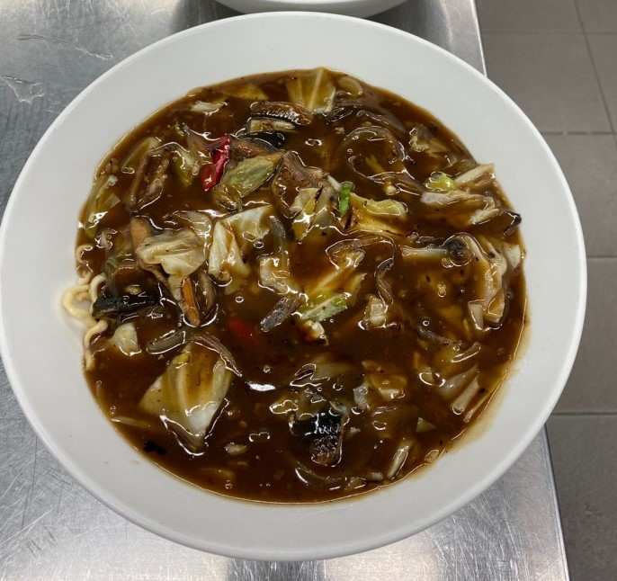

目錄
紅燒蝦仁羹
清蒸肉圓
學習心得
炒鱔魚意麵
1煮調味醬汁:將調味料分階段下,先下將其混合煮開,煮開後再下醬油+五印醋(烏醋再滾煮一下,轉小火將太白粉水倒下(以順向畫慢慢一倒下一攪動),湯頭微帶有度醬汁關火,倒入大碗中
2先熱過在下油,乾洋蔥絲+紅辣椒+蒜頭末炒熟炒香,再下高單菜+蒜苗快炒,菜熟後就可倒入濃稠汁混合入味備用
3一鍋水,水滾下兩包意麵,再撈起漏水
4盛盤:一深盤,先放入意,再將濃稠醬汁及食料澆淋在麵上完成
